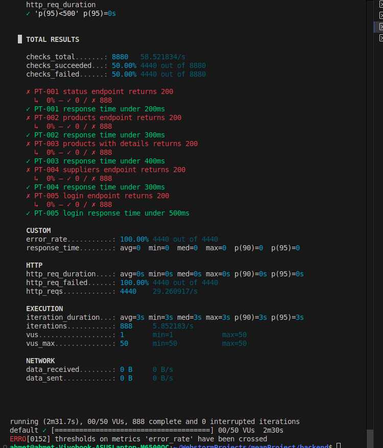
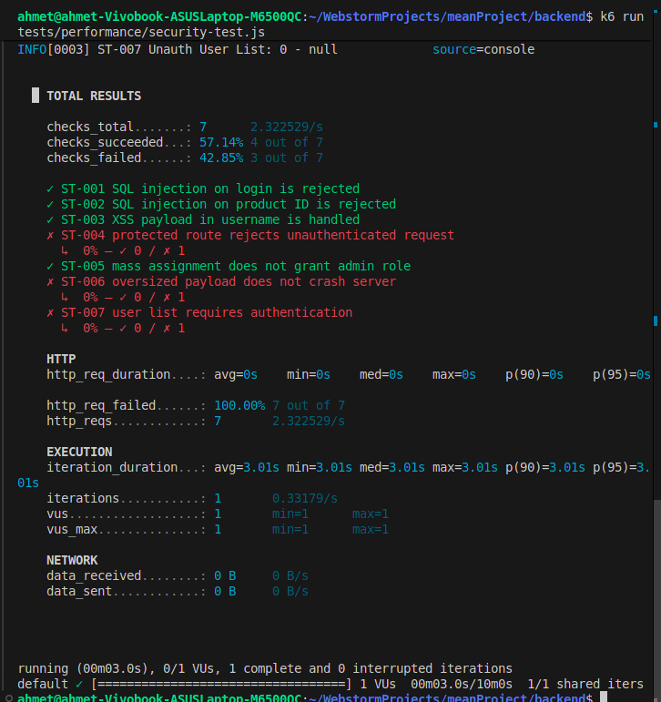

Prime Stack Test Execution Report
Team: Prime Stack
Application under test: Frost Inventory and Shopping System
Report date: 18 May 2026
1. Execution Summary
Testing was performed for the Frost Inventory and Shopping System in the local development environment. The testing effort included automated backend functional tests, Playwright UI/usability scenarios, k6 performance and security scripts, and an OWASP ZAP automated scan of the backend API.
The final defect list contains eight confirmed defects because the previous purchase userId defect was removed. DEF-001 through DEF-008 are now the canonical IDs used across all reports.
2. Test Environment
| Item | Value |
|---|---|
| Backend | Express API on http://localhost:3000 |
| Frontend | Angular app on http://localhost:4200 |
| Database | MySQL database frost |
| Functional tools | Jest, Supertest |
| Frontend/usability tool | Playwright |
| Performance/security script tool | k6 |
| Security scanner | ZAP by Checkmarx 2.17.0 |
3. Execution Results by Test Type
| Test type | Planned | Evidence | Result summary |
|---|---|---|---|
| Functional API tests | 36 | backend/tests/functionality | Final run passed: 4 suites, 36 tests |
| Frontend usability checks | 3 | frontend/tests/example.spec.ts | Playwright scenarios are available for registration/login and product browsing |
| Performance tests | 6 | backend/tests/performance/load-test.js | Latest uploaded run is invalid because k6 received no HTTP responses |
| Security scripted tests | 7 | backend/tests/performance/security-test.js | Defects were identified and fixed; unreachable run evidence is retained separately |
| ZAP scan | 1 scan | docs/testing/evidence/2026-05-14-ZAP-Secuirty-Report-.html | Header findings recorded under DEF-008 |
4. Functional Test Execution
Before the fixes, the functional suite showed 3 failing tests. The failures were connected to missing/invalid email handling and purchase SQL interpolation.
After applying fixes, the final functional result was:
```text
Test Suites: 4 passed, 4 total
Tests: 36 passed, 36 total
```

5. Frontend Usability Test Execution
Frontend usability tests are written with Playwright. They cover:
- UT-001: New user registration/login preparation flow.
- UT-002: Product browsing/client dashboard flow.
- UT-003: Existing user login flow.
The Playwright screenshots are not used as defect evidence unless a real UI failure is observed.
6. Performance Test Execution
The k6 load test uses this load profile:
| Stage | Duration | Target virtual users |
|---|---|---|
| Normal load | 30 seconds | 5 |
| Load ramp | 1 minute | 20 |
| Stress | 30 seconds | 50 |
| Recovery | 30 seconds | 0 |
Performance acceptance thresholds:
- 95% of requests should complete in under 500 ms.
- Error rate should stay below 10%.
The latest uploaded k6 load result is not a valid performance failure. It shows status 0, http_req_failed 100%, and data_received 0 B, which means k6 did not receive HTTP responses from the backend. This normally happens when the backend server is not running or is unreachable at http://localhost:3000.

7. Security Test Execution
The scripted security test covers:
- SQL injection on login.
- SQL injection in product ID parameter.
- XSS payload in registration username.
- Unauthenticated profile access.
- Mass assignment using
role: "admin". - Oversized login payload.
- Unauthenticated access to
/User/users.
One uploaded k6 security run also shows status 0 and data_received 0 B. That specific run is invalid for pass/fail grading because k6 could not reach the backend. The security defects themselves were still confirmed by route review and earlier scripted checks, then fixed in code.

8. ZAP Scan Results
ZAP report details:
| Attribute | Value |
|---|---|
| Tool | ZAP by Checkmarx |
| Version | 2.17.0 |
| Generated | Thu 14 May 2026, 14:16:40 |
| Site | http://localhost:3000 |
| Evidence file | docs/testing/evidence/2026-05-14-ZAP-Secuirty-Report-.html |
ZAP alert summary:
| Alert | Risk | Confidence | Evidence |
|---|---|---|---|
| CSP failure to define directive with no fallback | Medium | High | default-src 'none' without frame-ancestors and form-action |
Server leaks X-Powered-By | Low | Medium | X-Powered-By: Express |
X-Content-Type-Options header missing | Low | Medium | /Product/ did not include nosniff |
| User Agent Fuzzer | Informational | Medium | Response changed for an old IE user agent |
9. Confirmed Defects
| ID | Title | Severity | Status |
|---|---|---|---|
| DEF-001 | Missing/invalid email returns 500 instead of 400 | Medium | Fixed |
| DEF-002 | Template literal bug in getPurchaseByUserId | Medium | Fixed |
| DEF-003 | SupplierRoute POST has no error handling | Medium | Fixed |
| DEF-004 | Login route hardcodes status 500 | Medium | Fixed |
| DEF-005 | Mass assignment allows any user to register as admin | Critical | Fixed |
| DEF-006 | /User/users exposes all user data without authentication | High | Fixed |
| DEF-007 | XSS payload stored in database without sanitization | Medium | Fixed |
| DEF-008 | Missing security headers | Low | Fixed |
10. Overall Assessment
The application now has stronger automated coverage for core API behavior and the confirmed defects have corresponding fixes. The main remaining documentation action is to re-run k6 performance with the backend server running so the result shows real HTTP status codes instead of status 0.
11. Evidence List
| Evidence | File |
|---|---|
| ZAP full report | docs/testing/evidence/2026-05-14-ZAP-Secuirty-Report-.html |
| DEF-001 before/after evidence | docs/testing/evidence/defects/def-001-*.png |
| DEF-002 before/after evidence | docs/testing/evidence/defects/def-002-*.png |
| DEF-004 login status fix | docs/testing/evidence/defects/def-004-login-statuscode-fix.png |
| DEF-005 mass-assignment fix | docs/testing/evidence/defects/def-005-mass-assignment-fix.png |
| DEF-006 user-list auth fix | docs/testing/evidence/defects/def-006-user-list-auth-fix.png |
| DEF-007 XSS validation fix | docs/testing/evidence/defects/def-007-xss-username-validation-fix.png |
| DEF-008 security headers fix | docs/testing/evidence/defects/def-008-security-headers-fix.png |
| Functional pass screenshot | docs/testing/evidence/defects/functional-after-36-passed.png |
| Invalid k6 load run | docs/testing/evidence/defects/performance-unreachable-run.png |
| Invalid k6 security run | docs/testing/evidence/defects/security-unreachable-run.png |